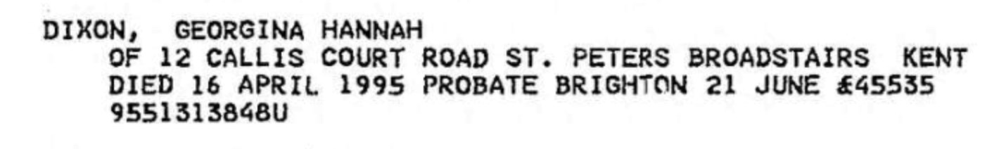

Georgina Hannah Dixon (née Culmer) 1898 - 1995
[ Home ] | [ Calendar ] | [ Surnames Index ] | [ Errors ] | [ Family History ]The child of Charles Culmer (an agricultural labourer) and Emma Beak, Georgina Culmer, (also known as Cissie Culmer) the first cousin twice-removed on the mother's side of Nigel Horne, was born in Minster, Thanet, Kent, England on 17 May 18981,2,3 and married Frederick Dixon (with whom she had 2 children: Frederick Charles and Arthur S) at St Paul's Church, Haringey, London, England on 9 Jun 1919.
During her life, she was living at 1 Chalk Hole Cottages, Flete, Kent, England on 31 Mar 19016; at Newports Lydden in Flete on 2 Apr 19117; at 30 Canning Crescent, Wood Green, London in 19385; at 71 Tottenhall Road, Palmers Green, London on 29 Sept 19391; and at 12 Callis Court Road, St Peters, Thanet, Kent in 1995.
She died on 16 Apr 1995 in Thanet, Kent, England3,4.
Parents
- Charles was born on 5 Dec 1852
- Emma was born on 25 Sept 1854
Children
- Frederick Charles was born on 7 Apr 1922
- Arthur S was born on 29 Aug 1923
Citations
- 1939 Register - Findmypast (was the wife of the head of the household)
- England & Wales births 1837-2006 - Findmypast
- England & Wales deaths 1837-2007 - Findmypast
- England & Wales Government Probate Death Index 1858-2019 - Findmypast
- London, England, Electoral Registers, 1832-1965 Ancestry.com Operations, Inc.
- 1901 England, Wales & Scotland Census - Findmypast (was age 2 and the daughter of the head of the household)
- 1911 Census for England & Wales - Findmypast (was age 12 and the daughter of the head of the household)
Media
Georgina Hannah Culmer - Probate

1938 Electoral Register

1901 England, Wales & Scotland Census - GBC/1901/0005521447
England & Wales births 1837-2006 - BMD/B/1898/2/AZ/000140/007
England & Wales deaths 1837-2007 - BMD/D/1995/4/80697500
England & Wales Government Probate Death Index 1858-2019 - GBOR/GOVPROBATE/C/1995-1995/00056571
1939 Register - TNA-R39-0890-0890I-011-29
Family Tree

Map
Generated by ged2site. Last updated on Jul 3, 2024
Known Issues
Marriage date (9 Jun 1919) has no citations
Residence record for 1995 contains no citation
Listed in the residence for 1938, but spouse Frederick Dixon is not
Listed in the residence for 29 Sep 1939, but spouse Frederick Dixon is not
Listed in the residence for 1995, but spouse Frederick Dixon is not